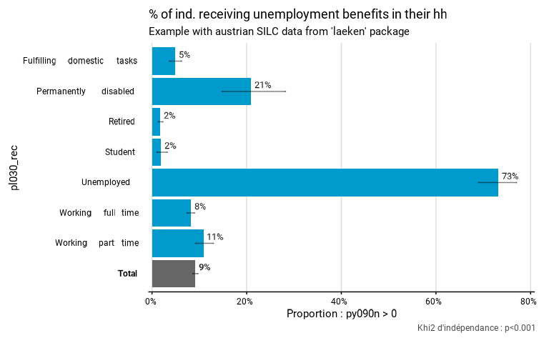

Function to compare a proportion among different groups based on complex survey data. It produces a list containing a table, including the confidence intervals of the indicators, a ready-to-be published ggplot graphic and a Chi-Square statistical test (using survey::svychisq). Exporting those results to an Excell file is possible. The confidence intervals and the statistical test are taking into account the complex survey design. In case of facets, the Chi-square test is computed on the total proportion between facets (and not within facets). In case of second group (group.fill), no Chi-square test is computed.
Usage
prop_group(
data,
group,
prop_exp,
group.fill = NULL,
facet = NULL,
filter_exp = NULL,
...,
na.rm.group = T,
na.rm.facet = T,
na.prop = "rm",
total = TRUE,
prop_method = "beta",
reorder = F,
show_ci = T,
show_n = FALSE,
show_value = TRUE,
show_labs = TRUE,
total_name = NULL,
scale = 100,
digits = 0,
unit = "%",
dec = NULL,
col = "deepskyblue3",
pal = "Coast",
direction = 1,
desaturate = 0,
lighten = 0,
darken = 0,
dodge = 0.9,
font = "Roboto",
wrap_width_y = 25,
wrap_width_leg = 25,
legend_ncol = 4,
title = NULL,
subtitle = NULL,
xlab = NULL,
ylab = NULL,
legend_lab = NULL,
caption = NULL,
lang = "fr",
theme = "fonctionr",
coef_font = 1,
export_path = NULL
)Arguments
- data
A dataframe or an object from the survey package or an object from the srvyr package.
- group
A variable defining the groups to be compared.
- prop_exp
An expression defining the proportion to be computed. Notice that if na.prop is "rm" any is.na() is not allowed in this argument. The removal of NA's is done before the computation of the proportion. Thus any function that takes into account NA's (e.g. 'in') will not work as designed in this argument, unless na.prop is set to "include".
- group.fill
A variable defining a second variable of groups to be compared.
- facet
A variable defining the faceting groups.
- filter_exp
An expression filtering the data, preserving the design.
- ...
All options possible in as_survey_design in srvyr package.
- na.rm.group
TRUE if you want to remove observations with NA on the group and the group.fill variables. FALSE if you want to create a group with the NA values for the group variable and a group.fill with the NA values for the group.fill variable. Default is TRUE.
- na.rm.facet
TRUE if you want to remove observations with NA on the facet variable. FALSE if you want to create a facet with the NA values for the facet variable. Default is TRUE.
- na.prop
"rm" to remove observations with NA on one of the variables used in prop_exp before computing the proportions, "include" to compute the proportions with the NA's in the denominators. Default is "rm". If na.prop is set to "rm" the function 'is.na()' is not allowed in prop_exp.
- total
TRUE if you want to compute a total, FALSE if you don't. The default is TRUE.
- prop_method
Type of proportion method used to compute confidence intervals. See survey::svyciprop() for details. Default is beta method.
- reorder
TRUE if you want to reorder the groups according to the proportion. NA value, in case if na.rm.group = FALSE, is not included in the reorder. In case of facets, the groups are reordered based on each median group. Default is FALSE.
- show_ci
TRUE if you want to show the error bars on the graphic. FALSE if you don't want to show the error bars. Default is TRUE.
- show_n
TRUE if you want to show on the graphic the number of observations in the sample in each group. FALSE if you don't want to show this number. Default is FALSE.
- show_value
TRUE if you want to show the proportions in each group on the graphic. FALSE if you don't want to show the proportion. Default is TRUE.
- show_labs
TRUE if you want to show axes and legend (in case of a group.fill) labels. FALSE if you don't want to show any labels on axes and legend. Default is TRUE.
- total_name
Name of the total displayed on the graphic. Default is "Total" in French and in English and "Totaal" in Dutch.
- scale
Denominator of the proportions. Default is 100 to interpret numbers as percentages.
- digits
Number of decimal places displayed on the values labels on the graphic. Default is 0.
- unit
Unit displayed on the graphic. Default is percent.
- dec
Decimal mark displayed on the graphic. Default depends on lang: "," for fr and nl ; "." for en.
- col
Color of the bars if there is no group.fill. col must be a R color or an hexadecimal color code. Default is "deepskyblue3". The colors of total and NA group (in case of na.rm.group == FALSE) are always "grey40" and "grey". If there is a group.fill, col has no effect and pal argument should be used instead.
- pal
Colors of the bars if there is a group.fill. pal must be vector of R colors or hexadecimal colors or a palette from packages MetBrewer or PrettyCols or a palette from fonctionr. Default is "Coast" from PrettyCols. The color of NA group.fill (in case of na.rm.group == FALSE) and of the total are always "grey" and "grey40". If there is no group.fill, pal has no effect and col argument should be used instead.
- direction
Direction of the palette color. Default is 1. The opposite direction is -1. If there is no group.fill, this argument has no effect.
- desaturate
Numeric specifying the amount of desaturation where 1 corresponds to complete desaturation (no colors, grey layers only), 0 to no desaturation, and values in between to partial desaturation. Default is 0. It affects only the palette (pal, if there is a second group) and not the monocolor (col, if there is no second group). See colorspace::desaturate for details. If desaturate and lighten/darken arguments are used, lighten/darken is applied in a second time (i.e. on the color transformed by desaturate).
- lighten
Numeric specifying the amount of lightening. Negative numbers cause darkening. Value shoud be ranged between -1 (black) and 1 (white). Default is 0. It doesn't affect the color of NAs (in case of na.rm.group = FALSE). It affects only the palette (pal, if there is a second group) and not the monocolor (col, if there is no second group). See colorspace::lighten for details. If both argument ligthen and darken are used (not advised), darken is applied in a second time (i.e. on the color transformed by lighten).
- darken
Numeric specifying the amount of lightening. Negative numbers cause lightening. Value shoud be ranged between -1 (white) and 1 (black). Default is 0. It doesn't affect the color of NAs (in case of na.rm.group = FALSE). It affects only the palette (pal, if there is a second group) and not the monocolor (col, if there is no second group). See colorspace::darken for details. If both argument ligthen and darken are used (not advised), darken is applied in a second time (i.e. on the color transformed by lighten).
- dodge
Width of the bars. Default is 0.9 to let a small space between bars. A value of 1 leads to no space betweens bars. Values higher than 1 are not advised because they cause an overlaping of the bars. dodge doesn't affect the spaces between second groups (group.fill). There is always no space between second groups.
- font
Font used in the graphic. See load_and_active_fonts() for available fonts. Default is "Roboto".
- wrap_width_y
Number of characters before going to the line for the labels of the groups. Default is 25.
- wrap_width_leg
Number of characters before going to the line for the labels of the group.fill. Default is 25.
- legend_ncol
Number of colomns in the legend. Default is 4.
- title
Title of the graphic.
- subtitle
Subtitle of the graphic.
- xlab
X label on the graphic. As coord_flip() is used in the graphic, xlab refers to the x label on the graphic, after the coord_flip(), and not to the x variable in the data. Default (xlab = NULL) displays "Proportion :" (if lang == "fr"), "Proportion:" (if lang == "en" ) or "Aandeel:" (if lang == "nl"), followed by the prop_exp argument. To show no X label, use xlab = "".
- ylab
Y label on the graphic. As coord_flip() is used in the graphic, ylab refers to the y label on the graphic, after the coord_flip(), and not to the y variable in the data. Default (ylab = NULL) displays the name of the group variable. To show no Y label, use ylab = "".
- legend_lab
Legend (fill) label on the graphic. Default (legend_lab = NULL) displays the name of the group.fill variable. To show no legend label, use legend_lab = "".
- caption
Caption of the graphic. This caption goes under de default caption showing the result of the Chi-Square test. There is no way of not showing the result of the chi-square test as a caption.
- lang
Language of the indications on the graphic. Possibilities are "fr" (french), "nl" (dutch) and "en" (english). Default is "fr".
- theme
Theme of the graphic. Default is "fonctionr". "IWEPS" adds y axis lines and ticks. NULL uses the default grey ggplot2 theme.
- coef_font
A multiplier factor for font size of all fonts on the graphic. Default is 1. Usefull when exporting the graphic for a publication (e.g. in a Quarto document).
- export_path
Path to export the results in an xlsx file. The file includes three (without group.fill) or two sheets (with a group.fill): the table, the graphic and the Chi-Square statistical test result.
Value
A list that contains a table, a ggplot graphic and, in most cases, a Chi-square statistical test.
Examples
# Loading of data
data(eusilc, package = "laeken")
# Recoding eusilc$pl030 into eusilc$pl030_rec
eusilc$pl030_rec <- NA
eusilc$pl030_rec[eusilc$pl030 == "1"] <- "Working full time"
eusilc$pl030_rec[eusilc$pl030 == "2"] <- "Working part time"
eusilc$pl030_rec[eusilc$pl030 == "3"] <- "Unemployed"
eusilc$pl030_rec[eusilc$pl030 == "4"] <- "Student"
eusilc$pl030_rec[eusilc$pl030 == "5"] <- "Retired"
eusilc$pl030_rec[eusilc$pl030 == "6"] <- "Permanently disabled"
eusilc$pl030_rec[eusilc$pl030 == "7"] <- "Fulfilling domestic tasks"
# Computation, taking sample design into account
eusilc_prop <- prop_group(
eusilc,
group = pl030_rec,
prop_exp = py090n > 0,
strata = db040,
ids = db030,
weight = rb050,
title = "% of ind. receiving unemployment benefits in their hh",
subtitle = "Example with austrian SILC data from 'laeken' package"
)
#> Warning: NAs introduced by coercion
#> Warning: Parametres actifs dans fonctionr_options(): font, coef_font
#> Input: data.frame
#> Sampling design -> ids: db030, strata: db040, weights: rb050
#> 2720 observations removed due to missing group
#> 0.0729129314422607
#> Variable(s) detected in prop_exp: py090n
#> 0 observations removed due to missing value(s) for the variable(s) in prop_exp
# Results in graph form
eusilc_prop$graph
#> Warning: Removed 7 rows containing missing values or values outside the scale range
#> (`geom_text()`).
#> Warning: Removed 1 row containing missing values or values outside the scale range
#> (`geom_text()`).

# Results in table format
eusilc_prop$tab
#> # A tibble: 8 × 11
#> pl030_rec prop prop_low prop_upp n_sample n_true_weighted
#> <fct> <dbl> <dbl> <dbl> <int> <dbl>
#> 1 Fulfilling domestic tasks 0.0485 0.0369 0.0624 1207 31048.
#> 2 Permanently disabled 0.209 0.148 0.282 178 21975.
#> 3 Retired 0.0177 0.0134 0.0229 3146 31988.
#> 4 Student 0.0194 0.0106 0.0323 736 7666.
#> 5 Unemployed 0.732 0.690 0.770 518 221878.
#> 6 Working full time 0.0818 0.0741 0.0899 5162 234629.
#> 7 Working part time 0.110 0.0921 0.130 1160 69869.
#> 8 Total 0.0916 0.0863 0.0971 12107 619054.
#> # ℹ 5 more variables: n_true_weighted_low <dbl>, n_true_weighted_upp <dbl>,
#> # n_tot_weighted <dbl>, n_tot_weighted_low <dbl>, n_tot_weighted_upp <dbl>